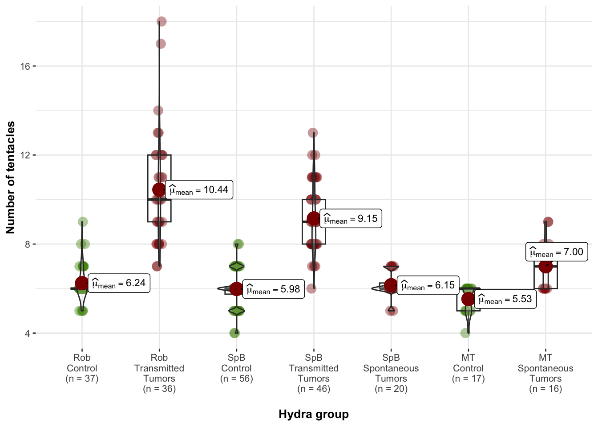
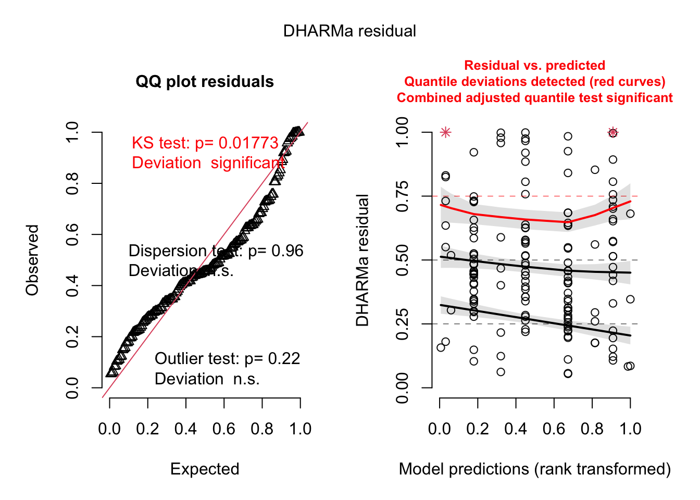

Analysis of the tentacules numbers of donor and recipient hydras
Comparisions between tumorous and non-tumorous of each donor lineages
We calculated the differences between tumors and non-tumors within each
line using Wilcox tests.
wilcox.test(data_1$donor_tentacle[data_1$group=="RobNT"], data_1$donor_tentacle[data_1$group=="RobT"])##
## Wilcoxon rank sum test with continuity correction
##
## data: data_1$donor_tentacle[data_1$group == "RobNT"] and data_1$donor_tentacle[data_1$group == "RobT"]
## W = 27, p-value = 6.361e-13
## alternative hypothesis: true location shift is not equal to 0wilcox.test(data_1$donor_tentacle[data_1$group=="SpBNT"], data_1$donor_tentacle[data_1$group=="SpBT"])##
## Wilcoxon rank sum test with continuity correction
##
## data: data_1$donor_tentacle[data_1$group == "SpBNT"] and data_1$donor_tentacle[data_1$group == "SpBT"]
## W = 64, p-value < 2.2e-16
## alternative hypothesis: true location shift is not equal to 0wilcox.test(data_1$donor_tentacle[data_1$group=="SpBNT"], data_1$donor_tentacle[data_1$group=="SpB_spontT"])##
## Wilcoxon rank sum test with continuity correction
##
## data: data_1$donor_tentacle[data_1$group == "SpBNT"] and data_1$donor_tentacle[data_1$group == "SpB_spontT"]
## W = 491, p-value = 0.371
## alternative hypothesis: true location shift is not equal to 0wilcox.test(data_1$donor_tentacle[data_1$group=="MTNT"], data_1$donor_tentacle[data_1$group=="MTT"])##
## Wilcoxon rank sum test with continuity correction
##
## data: data_1$donor_tentacle[data_1$group == "MTNT"] and data_1$donor_tentacle[data_1$group == "MTT"]
## W = 30, p-value = 4.819e-05
## alternative hypothesis: true location shift is not equal to 0Graph of number of tentacles in donor lines

Graph of number of tentacles in recipient lines

Analysis of the variation of the number of tentacles after grafting
Transmissible tumors dataset
Random effects selection
donor_trans <- subset(donor_trans, donor_trans$diff_maxR!="NA")
m1 <- glmmTMB(data=donor_trans, diff_maxR+2 ~ donor +donor_status + receiver + donor_tentacle + receiver_tentacle + (1|lot) + (1|date_draft), family = poisson, REML = T)
m2 <- glmmTMB(data=donor_trans, diff_maxR+2 ~ donor +donor_status + receiver + donor_tentacle + receiver_tentacle + (1|date_draft/lot), family = poisson, REML = T)
m3 <- glmmTMB(data=donor_trans, diff_maxR+2 ~ donor +donor_status + receiver + donor_tentacle + receiver_tentacle + (1|lot), family = poisson, REML = T)
m4 <- glmmTMB(data=donor_trans, diff_maxR+2 ~ donor +donor_status + receiver + donor_tentacle + receiver_tentacle + (1|date_draft), family = poisson, REML = T)
m5 <- glmmTMB(data=donor_trans, diff_maxR+2 ~ donor +donor_status + receiver + donor_tentacle + receiver_tentacle, family = poisson, REML = T)
AICc(m1, m2, m3, m4, m5) ## df AICc
## m1 8 621.6455
## m2 8 621.6455
## m3 7 620.2526
## m4 7 619.4657
## m5 6 620.6635
There is no need to include any of the potential random effects that
have been measured.
Fixed effects selection
Given the number of potential effects to evaluate, we have opted for an
automatic selection of fixed effects
options(na.action = "na.omit")
mT_trans_full = glmmTMB(data=donor_trans, diff_maxR+2 ~ donor * donor_status * receiver + receiver_tentacle + donor_tentacle, family = poisson, REML = F)
options(na.action = "na.fail")
dd2 = dredge(mT_trans_full, rank = "AICc")## Fixed terms are "cond((Int))" and "disp((Int))"Table of the results of the best fitted models (lower AICc+2)
| diff_maxR + 2 | diff_maxR + 2 | diff_maxR + 2 | |||||||
|---|---|---|---|---|---|---|---|---|---|
| Predictors | Incidence Rate Ratios | CI | p | Incidence Rate Ratios | CI | p | Incidence Rate Ratios | CI | p |
| donor [Rob] | 1.26 | 0.84 – 1.87 | 0.263 | ||||||
| donor status [T] | 1.82 | 1.28 – 2.58 | 0.001 | 1.43 | 1.20 – 1.72 | <0.001 | 1.45 | 1.21 – 1.73 | <0.001 |
| receiver [TV] | 0.92 | 0.64 – 1.32 | 0.661 | 0.86 | 0.72 – 1.04 | 0.114 | |||
| receiver tentacle | 0.83 | 0.74 – 0.93 | 0.001 | 0.81 | 0.73 – 0.91 | <0.001 | 0.83 | 0.74 – 0.93 | 0.001 |
|
donor status [T] × receiver [TV] |
0.74 | 0.46 – 1.19 | 0.219 | ||||||
|
donor [Rob] × donor status [T] |
0.47 | 0.28 – 0.80 | 0.006 | ||||||
|
donor [Rob] × receiver [TV] |
0.76 | 0.44 – 1.31 | 0.325 | ||||||
|
(donor [Rob] × donor status [T]) × receiver [TV] |
2.75 | 1.32 – 5.75 | 0.007 | ||||||
| Observations | 160 | 160 | 160 | ||||||
best_model_tentaTrans <- glmmTMB(data=donor_trans,diff_maxR+2 ~ donor_status + receiver_tentacle, family = poisson, REML = T)
tab_model(best_model_tentaTrans, show.intercept = F, show.r2=F)| diff_maxR + 2 | |||
|---|---|---|---|
| Predictors | Incidence Rate Ratios | CI | p |
| donor status [T] | 1.45 | 1.21 – 1.73 | <0.001 |
| receiver tentacle | 0.83 | 0.74 – 0.93 | 0.001 |
| Observations | 160 | ||
On average, a individual who received a transplant of tumorous tissue developed 1.45 more tentacles compared to those who received healthy tissue and developed only one tentacle. Furthermore, individuals with a high number of tentacles prior to transplantation experienced a reduced increase in the number of tentacles after the procedure (IRR=0.83 [0.74 - 0.93], p=0.001), suggesting a possible threshold effect.
simulateResiduals(best_model_tentaTrans, plot=T)
The model is not perfectly balanced, however changing to another family
such as negative binomial or zero-truncated does not significantly
enhance the quality of the models or their outcomes.
Spontaneous tumors dataset
Random effects selection
donor_spont <- subset(donor_spont, donor_spont$diff_maxR!="NA")
m1 <- glmmTMB(data=donor_trans, diff_maxR+2 ~ donor + Tumors +donor_status + receiver + donor_tentacle + receiver_tentacle + (1|lot) + (1|date_draft), family = poisson, REML = T)
m2 <- glmmTMB(data=donor_trans, diff_maxR+2 ~ donor + Tumors +donor_status + receiver + donor_tentacle + receiver_tentacle + (1|date_draft/lot), family = poisson, REML = T)
m3 <- glmmTMB(data=donor_trans, diff_maxR+2 ~ donor + Tumors +donor_status + receiver + donor_tentacle + receiver_tentacle + (1|lot), family = poisson, REML = T)
m4 <- glmmTMB(data=donor_trans, diff_maxR+2 ~ donor + Tumors +donor_status + receiver + donor_tentacle + receiver_tentacle + (1|date_draft), family = poisson, REML = T)
m5 <- glmmTMB(data=donor_trans, diff_maxR+2 ~ donor + Tumors +donor_status + receiver + donor_tentacle + receiver_tentacle, family = poisson, REML = T)
AICc(m1, m2, m3, m4, m5) ## df AICc
## m1 9 616.8626
## m2 9 616.8626
## m3 8 615.5684
## m4 8 614.6162
## m5 7 614.7731
There is no need to include any of the potential random effects that
have been measured.
Fixed effects selection
Given the number of potential effects to evaluate, we have opted for an
automatic selection of fixed effects
options(na.action = "na.omit")
mT_spont_full = glmmTMB(data=donor_spont, diff_maxR+2 ~ donor * donor_status * receiver + receiver_tentacle +donor_tentacle, family = poisson)
options(na.action = "na.fail")
dd = dredge(mT_spont_full, rank = "AICc")## Fixed terms are "cond((Int))" and "disp((Int))"Table of the results of the best fitted models (lower AICc+2)
| diff_maxR + 2 | diff_maxR + 2 | diff_maxR + 2 | diff_maxR + 2 | diff_maxR + 2 | |||||||||||
|---|---|---|---|---|---|---|---|---|---|---|---|---|---|---|---|
| Predictors | Incidence Rate Ratios | CI | p | Incidence Rate Ratios | CI | p | Incidence Rate Ratios | CI | p | Incidence Rate Ratios | CI | p | Incidence Rate Ratios | CI | p |
| receiver [TV] | 0.88 | 0.68 – 1.13 | 0.302 | ||||||||||||
| receiver tentacle | 0.94 | 0.81 – 1.10 | 0.440 | ||||||||||||
| donor [MT] | 0.91 | 0.69 – 1.19 | 0.498 | ||||||||||||
| donor tentacle | 0.96 | 0.84 – 1.10 | 0.579 | ||||||||||||
| Observations | 100 | 100 | 100 | 100 | 100 | ||||||||||
best_model_tentaSpont <- glmmTMB(data=donor_spont,diff_maxR+2 ~ 1, family = poisson, REML = T)
tab_model(best_model_tentaSpont, show.intercept = F, show.r2=F)| diff_maxR + 2 | |||
|---|---|---|---|
| Predictors | Incidence Rate Ratios | CI | p |
| NA | NA | NA | NA |
| Observations | 100 | ||
None of the factors assessed had a notable effect on the variability of the tentacle count following transplantation within this group.
Comparision of the number of supernumerary tentacles depending of tumor size
More simple analysis of the effect of tumor size on Diff max R
library(glmulti)
summary(data_1)## ID Manipulator donor donor_status donor_tentacle
## 1 : 1 Justine: 87 MT : 33 NT:110 Min. : 4.000
## 2 : 1 Océane :141 Rob : 73 T :118 1st Qu.: 6.000
## 3 : 1 SpB :102 Median : 7.000
## 4 : 1 SpB_spont: 20 Mean : 7.421
## 5 : 1 3rd Qu.: 9.000
## 6 : 1 Max. :18.000
## (Other):222
## receiver receiver_tentacle lot date_draft
## SpB\nControl:104 Min. :3.000 22 : 22 05/04 : 23
## Wild\nGroup :124 1st Qu.:5.000 18 : 12 12/04 : 22
## Median :6.000 1 : 11 29/03 : 22
## Mean :5.635 5 : 11 04/02 : 20
## 3rd Qu.:6.000 8 : 11 08/04 : 20
## Max. :8.000 9 : 11 25/01 : 19
## NA's :6 (Other):150 (Other):102
## abnormalities dateT Tumors dateD Death
## Excluded: 11 Min. : 6.00 0 : 91 Min. :11.00 0:157
## Lost : 1 1st Qu.:20.00 1 :132 1st Qu.:34.00 1: 71
## Normal :202 Median :27.00 NA's: 5 Median :41.00
## Sick : 14 Mean :29.79 Mean :42.85
## 3rd Qu.:40.00 3rd Qu.:56.00
## Max. :70.00 Max. :70.00
## NA's :97 NA's :156
## tenta_1 tenta_2 tenta_3 tenta_4
## Min. :3.000 Min. :2.000 Min. : 0.000 Min. : 0.000
## 1st Qu.:5.000 1st Qu.:5.000 1st Qu.: 5.000 1st Qu.: 5.000
## Median :6.000 Median :6.000 Median : 6.000 Median : 6.000
## Mean :5.596 Mean :5.565 Mean : 5.544 Mean : 5.667
## 3rd Qu.:6.000 3rd Qu.:6.000 3rd Qu.: 6.000 3rd Qu.: 6.000
## Max. :8.000 Max. :8.000 Max. :11.000 Max. :13.000
## NA's :5 NA's :11 NA's :15
## tenta_5 tenta_6 tenta_7 tenta_8
## Min. : 0.000 Min. : 1.000 Min. : 2.000 Min. : 0.000
## 1st Qu.: 5.000 1st Qu.: 5.000 1st Qu.: 5.000 1st Qu.: 5.000
## Median : 6.000 Median : 6.000 Median : 6.000 Median : 6.000
## Mean : 5.712 Mean : 5.648 Mean : 5.835 Mean : 5.671
## 3rd Qu.: 6.000 3rd Qu.: 6.000 3rd Qu.: 6.750 3rd Qu.: 6.000
## Max. :11.000 Max. :14.000 Max. :15.000 Max. :14.000
## NA's :30 NA's :46 NA's :58 NA's :64
## tenta_9 tenta_10 buds_1 buds_2
## Min. : 0.000 Min. : 0.000 Min. :0.0000 Min. :0.00
## 1st Qu.: 4.250 1st Qu.: 5.000 1st Qu.:0.0000 1st Qu.:0.00
## Median : 6.000 Median : 6.000 Median :0.0000 Median :0.00
## Mean : 5.619 Mean : 5.733 Mean :0.3158 Mean :0.87
## 3rd Qu.: 6.000 3rd Qu.: 6.000 3rd Qu.:0.0000 3rd Qu.:1.00
## Max. :13.000 Max. :13.000 Max. :4.0000 Max. :6.00
## NA's :94 NA's :82 NA's :5
## buds_3 buds_4 buds_5 buds_6
## Min. : 0.000 Min. : 0.000 Min. : 0.00 Min. : 0.000
## 1st Qu.: 0.000 1st Qu.: 1.000 1st Qu.: 2.00 1st Qu.: 3.000
## Median : 1.000 Median : 3.000 Median : 5.00 Median : 6.000
## Mean : 2.046 Mean : 3.615 Mean : 5.47 Mean : 7.049
## 3rd Qu.: 3.000 3rd Qu.: 6.000 3rd Qu.: 8.00 3rd Qu.:10.000
## Max. :11.000 Max. :15.000 Max. :18.00 Max. :23.000
## NA's :11 NA's :15 NA's :30 NA's :46
## buds_7 buds_8 buds_9 buds_10
## Min. : 0.000 Min. : 0.000 Min. : 0.00 Min. : 0.00
## 1st Qu.: 4.000 1st Qu.: 4.000 1st Qu.: 4.00 1st Qu.: 5.00
## Median : 7.000 Median : 8.000 Median : 8.00 Median :10.00
## Mean : 8.404 Mean : 9.543 Mean :10.13 Mean :11.66
## 3rd Qu.:12.000 3rd Qu.:14.000 3rd Qu.:15.00 3rd Qu.:16.00
## Max. :27.000 Max. :33.000 Max. :39.00 Max. :43.00
## NA's :57 NA's :64 NA's :94 NA's :82
## Taille tumeur avant congelation Date congelation tenta_max
## Min. :0.000 Length:228 Min. : 3.000
## 1st Qu.:0.000 Class :character 1st Qu.: 6.000
## Median :1.000 Mode :character Median : 6.000
## Mean :2.028 Mean : 6.601
## 3rd Qu.:5.000 3rd Qu.: 7.000
## Max. :6.000 Max. :15.000
## NA's :84
## diff_max diff_maxR group
## Min. : 0.000 Min. :-2.0000 Rob\nControl :37
## 1st Qu.: 0.000 1st Qu.: 0.0000 Rob\nTransmitted\nTumors:36
## Median : 0.000 Median : 0.0000 SpB\nControl :56
## Mean : 1.004 Mean : 0.9414 SpB\nTransmitted\nTumors:46
## 3rd Qu.: 1.000 3rd Qu.: 1.0000 SpB\nSpontaneous\nTumors:20
## Max. :11.000 Max. :10.0000 MT\nControl :17
## NA's :6 MT\nSpontaneous\nTumors :16
## Taille_Grouped
## no tumors:60
## small :24
## medium :23
## big :37
## NA's :84
##
## data_1_tum <- subset(data_1, data_1$Tumors==1 & data_1$diff_maxR!="NA" &data_1$Taille_Grouped!="no tumors")
summary(data_1_tum)## ID Manipulator donor donor_status donor_tentacle
## 1 : 1 Justine:30 MT :14 NT:27 Min. : 4.000
## 2 : 1 Océane :48 Rob :17 T :51 1st Qu.: 6.000
## 3 : 1 SpB :36 Median : 7.000
## 5 : 1 SpB_spont:11 Mean : 7.641
## 6 : 1 3rd Qu.: 9.000
## 14 : 1 Max. :13.000
## (Other):72
## receiver receiver_tentacle lot date_draft abnormalities
## SpB\nControl:34 Min. :4.000 22 :12 12/04 :12 Excluded: 0
## Wild\nGroup :44 1st Qu.:5.000 1 : 7 25/01 :11 Lost : 0
## Median :6.000 5 : 6 04/02 : 8 Normal :73
## Mean :5.667 6 : 5 07/01 : 7 Sick : 5
## 3rd Qu.:6.000 9 : 5 29/03 : 7
## Max. :8.000 16 : 4 25/03 : 5
## (Other):39 (Other):28
## dateT Tumors dateD Death tenta_1 tenta_2
## Min. :14.00 0: 0 Min. :63 0:77 Min. :3.000 Min. :3.000
## 1st Qu.:20.00 1:78 1st Qu.:63 1: 1 1st Qu.:5.000 1st Qu.:5.000
## Median :28.00 Median :63 Median :6.000 Median :6.000
## Mean :34.06 Mean :63 Mean :5.641 Mean :5.679
## 3rd Qu.:48.00 3rd Qu.:63 3rd Qu.:6.000 3rd Qu.:6.000
## Max. :70.00 Max. :63 Max. :8.000 Max. :8.000
## NA's :1 NA's :77
## tenta_3 tenta_4 tenta_5 tenta_6
## Min. :4.000 Min. :4.000 Min. : 2.000 Min. :2.000
## 1st Qu.:5.000 1st Qu.:5.000 1st Qu.: 5.000 1st Qu.:5.000
## Median :6.000 Median :6.000 Median : 6.000 Median :6.000
## Mean :5.782 Mean :5.936 Mean : 5.949 Mean :5.936
## 3rd Qu.:6.000 3rd Qu.:7.000 3rd Qu.: 7.000 3rd Qu.:7.000
## Max. :8.000 Max. :9.000 Max. :10.000 Max. :9.000
##
## tenta_7 tenta_8 tenta_9 tenta_10
## Min. : 4.000 Min. : 1.000 Min. : 3.000 Min. : 0.000
## 1st Qu.: 5.000 1st Qu.: 5.000 1st Qu.: 5.000 1st Qu.: 5.000
## Median : 6.000 Median : 6.000 Median : 6.000 Median : 6.000
## Mean : 6.039 Mean : 5.936 Mean : 6.167 Mean : 6.064
## 3rd Qu.: 7.000 3rd Qu.: 7.000 3rd Qu.: 7.000 3rd Qu.: 7.000
## Max. :10.000 Max. :12.000 Max. :13.000 Max. :13.000
## NA's :1 NA's :12
## buds_1 buds_2 buds_3 buds_4
## Min. :0.0000 Min. :0.0000 Min. :0.000 Min. : 0.000
## 1st Qu.:0.0000 1st Qu.:0.0000 1st Qu.:0.000 1st Qu.: 1.000
## Median :0.0000 Median :0.0000 Median :1.000 Median : 3.000
## Mean :0.3974 Mean :0.9359 Mean :2.064 Mean : 3.654
## 3rd Qu.:0.7500 3rd Qu.:1.7500 3rd Qu.:3.000 3rd Qu.: 6.000
## Max. :4.0000 Max. :5.0000 Max. :8.000 Max. :11.000
##
## buds_5 buds_6 buds_7 buds_8
## Min. : 0.000 Min. : 0.000 Min. : 0.000 Min. : 0.000
## 1st Qu.: 2.000 1st Qu.: 3.000 1st Qu.: 3.000 1st Qu.: 4.000
## Median : 4.500 Median : 5.500 Median : 7.000 Median : 8.000
## Mean : 5.256 Mean : 6.551 Mean : 7.667 Mean : 8.731
## 3rd Qu.: 8.000 3rd Qu.:10.000 3rd Qu.:12.000 3rd Qu.:12.750
## Max. :17.000 Max. :23.000 Max. :23.000 Max. :27.000
##
## buds_9 buds_10 Taille tumeur avant congelation
## Min. : 0.000 Min. : 0.000 Min. :1.000
## 1st Qu.: 3.250 1st Qu.: 4.000 1st Qu.:1.250
## Median : 8.000 Median : 8.000 Median :3.000
## Mean : 9.045 Mean : 9.936 Mean :3.526
## 3rd Qu.:14.000 3rd Qu.:15.000 3rd Qu.:5.000
## Max. :31.000 Max. :32.000 Max. :6.000
## NA's :12
## Date congelation tenta_max diff_max diff_maxR
## Length:78 Min. : 4.000 Min. :0.000 Min. :-1.00
## Class :character 1st Qu.: 6.000 1st Qu.:0.000 1st Qu.: 0.00
## Mode :character Median : 7.000 Median :1.000 Median : 1.00
## Mean : 7.077 Mean :1.436 Mean : 1.41
## 3rd Qu.: 8.000 3rd Qu.:2.000 3rd Qu.: 2.00
## Max. :13.000 Max. :9.000 Max. : 8.00
##
## group Taille_Grouped
## Rob\nControl : 7 no tumors: 0
## Rob\nTransmitted\nTumors:10 small :21
## SpB\nControl :14 medium :22
## SpB\nTransmitted\nTumors:22 big :35
## SpB\nSpontaneous\nTumors:11
## MT\nControl : 6
## MT\nSpontaneous\nTumors : 8#data_1_tum$Taille_Grouped <- factor(data_1_tum$Taille_Grouped, levels = c("small", "medium", "big"), ordered = T)
models<- glmulti(diff_maxR ~ donor*donor_status*receiver*Taille_Grouped,
data=data_1_tum,
level = 2, method = 'h', crit='aicc',fitfunction = 'lm', pl = FALSE)## Initialization...
## TASK: Exhaustive screening of candidate set.
## Fitting...
##
## After 50 models:
## Best model: diff_maxR~1+donor+Taille_Grouped
## Crit= 308.630057187917
## Mean crit= 315.480071921399
##
## After 100 models:
## Best model: diff_maxR~1+donor+Taille_Grouped
## Crit= 308.630057187917
## Mean crit= 321.03971853356
## Completed.tmp <- weightable(models)
tmp2 <- tmp[tmp$aicc <= min(tmp$aicc) + 2,]
tmp2## model
## 1 diff_maxR ~ 1 + donor + Taille_Grouped
## 2 diff_maxR ~ 1 + Taille_Grouped
## 3 diff_maxR ~ 1 + donor + donor_status + Taille_Grouped
## 4 diff_maxR ~ 1
## 5 diff_maxR ~ 1 + donor
## 6 diff_maxR ~ 1 + donor + donor_status
## 7 diff_maxR ~ 1 + donor_status + Taille_Grouped
## 8 diff_maxR ~ 1 + donor_status + receiver + Taille_Grouped + receiver:donor_status
## 9 diff_maxR ~ 1 + donor_status
## 10 diff_maxR ~ 1 + receiver
## 11 diff_maxR ~ 1 + receiver + Taille_Grouped
## aicc weights
## 1 308.6301 0.09191527
## 2 308.8875 0.08081487
## 3 309.0022 0.07631124
## 4 309.4778 0.06016053
## 5 309.5051 0.05934245
## 6 309.7035 0.05373896
## 7 309.7061 0.05366982
## 8 310.1891 0.04215509
## 9 310.3724 0.03846237
## 10 310.4816 0.03641837
## 11 310.5783 0.03470054best_1 <- lm(diff_maxR ~ 1 + donor + Taille_Grouped, data = data_1_tum)
best_2 <- lm(diff_maxR ~ 1 + Taille_Grouped, data = data_1_tum)
best_3 <- lm(diff_maxR ~ 1 + donor + donor_status + Taille_Grouped, data = data_1_tum)
best_4 <- lm(diff_maxR ~ 1, data = data_1_tum)
best_5 <- lm(diff_maxR ~ 1 + donor , data = data_1_tum)
best_6 <- lm(diff_maxR ~ 1 + donor + donor_status, data = data_1_tum)
tab_model(best_1, best_2, best_3, best_4, best_5, best_6, show.intercept = F) | diff_maxR | diff_maxR | diff_maxR | diff_maxR | diff_maxR | diff_maxR | |||||||||||||
|---|---|---|---|---|---|---|---|---|---|---|---|---|---|---|---|---|---|---|
| Predictors | Estimates | CI | p | Estimates | CI | p | Estimates | CI | p | Estimates | CI | p | Estimates | CI | p | Estimates | CI | p |
| donor [Rob] | 1.49 | 0.29 – 2.68 | 0.016 | 1.46 | 0.27 – 2.65 | 0.017 | 1.43 | 0.22 – 2.64 | 0.022 | 1.42 | 0.21 – 2.62 | 0.022 | ||||||
| donor [SpB] | 1.11 | 0.07 – 2.15 | 0.036 | 1.08 | 0.05 – 2.12 | 0.040 | 1.01 | -0.05 – 2.07 | 0.060 | 0.99 | -0.06 – 2.04 | 0.065 | ||||||
| donor [SpB_spont] | 0.66 | -0.69 – 2.01 | 0.335 | 0.39 | -1.01 – 1.78 | 0.581 | 0.43 | -0.92 – 1.78 | 0.530 | 0.17 | -1.22 – 1.56 | 0.805 | ||||||
| Taille Grouped [medium] | 0.49 | -0.54 – 1.51 | 0.346 | 0.37 | -0.66 – 1.40 | 0.476 | 0.39 | -0.64 – 1.42 | 0.456 | |||||||||
| Taille Grouped [big] | 1.05 | 0.13 – 1.97 | 0.025 | 1.00 | 0.07 – 1.93 | 0.036 | 1.01 | 0.10 – 1.93 | 0.030 | |||||||||
| donor status [T] | 0.58 | -0.25 – 1.40 | 0.167 | 0.60 | -0.24 – 1.43 | 0.157 | ||||||||||||
| Observations | 78 | 78 | 78 | 78 | 78 | 78 | ||||||||||||
| R2 / R2 adjusted | 0.146 / 0.086 | 0.062 / 0.037 | 0.169 / 0.098 | 0.000 / 0.000 | 0.082 / 0.044 | 0.107 / 0.058 | ||||||||||||
simulateResiduals(best_1, plot=T)## Object of Class DHARMa with simulated residuals based on 250 simulations with refit = FALSE . See ?DHARMa::simulateResiduals for help.
##
## Scaled residual values: 0.664 0.968 0.508 0.484 0.524 0.68 0.292 0.28 0.276 0.32 0.416 0.648 0.444 0.276 0.18 0.22 0.86 0.936 0.168 0.116 ...tab_model(best_1, show.intercept = F)| diff_maxR | |||
|---|---|---|---|
| Predictors | Estimates | CI | p |
| donor [Rob] | 1.49 | 0.29 – 2.68 | 0.016 |
| donor [SpB] | 1.11 | 0.07 – 2.15 | 0.036 |
| donor [SpB_spont] | 0.66 | -0.69 – 2.01 | 0.335 |
| Taille Grouped [medium] | 0.49 | -0.54 – 1.51 | 0.346 |
| Taille Grouped [big] | 1.05 | 0.13 – 1.97 | 0.025 |
| Observations | 78 | ||
| R2 / R2 adjusted | 0.146 / 0.086 | ||
There is probably an effect of receiving a spontaneous versus transmissible tumors as donor Spb_spont is not different from the donor Mt (reference group) but the two other group are different from Mt. Also an effect of having a big tumor. It is better to keep seperated analysis. I’m just suspicious because the nul model without any effect is also among the best models.
### Transmissible only
donor_trans_tum <- subset(donor_trans, donor_trans$Tumors==1 & donor_trans$diff_maxR!="NA" &donor_trans$Taille_Grouped!="no tumors")
donor_trans_tum$Taille_Grouped <- factor(donor_trans_tum$Taille_Grouped)
summary(donor_trans_tum)## ID Manipulator donor donor_status donor_tentacle receiver
## 1 : 1 Justine:19 SpB:36 NT:21 Min. : 4.000 SpB:25
## 2 : 1 Océane :34 Rob:17 T :32 1st Qu.: 6.000 TV :28
## 3 : 1 Median : 8.000
## 14 : 1 Mean : 8.302
## 15 : 1 3rd Qu.:10.000
## 20 : 1 Max. :13.000
## (Other):47
## receiver_tentacle lot date_draft abnormalities dateT
## Min. :4.000 22 :10 12/04 :10 Excluded: 0 Min. :14.00
## 1st Qu.:5.000 1 : 5 04/02 : 7 Lost : 0 1st Qu.:20.00
## Median :6.000 5 : 4 25/01 : 7 Normal :51 Median :31.00
## Mean :5.698 9 : 4 07/01 : 5 Sick : 2 Mean :34.58
## 3rd Qu.:6.000 6 : 3 01/02 : 4 3rd Qu.:43.50
## Max. :8.000 8 : 3 29/03 : 4 Max. :70.00
## (Other):24 (Other):16 NA's :1
## Tumors dateD Death tenta_1 tenta_2 tenta_3
## 0: 0 Min. :63 0:52 Min. :3.000 Min. :3.000 Min. :4.000
## 1:53 1st Qu.:63 1: 1 1st Qu.:5.000 1st Qu.:5.000 1st Qu.:5.000
## Median :63 Median :6.000 Median :6.000 Median :6.000
## Mean :63 Mean :5.698 Mean :5.736 Mean :5.868
## 3rd Qu.:63 3rd Qu.:6.000 3rd Qu.:6.000 3rd Qu.:6.000
## Max. :63 Max. :8.000 Max. :8.000 Max. :8.000
## NA's :52
## tenta_4 tenta_5 tenta_6 tenta_7
## Min. :4.00 Min. : 2.000 Min. :3.000 Min. : 4.000
## 1st Qu.:5.00 1st Qu.: 5.000 1st Qu.:5.000 1st Qu.: 5.000
## Median :6.00 Median : 6.000 Median :6.000 Median : 6.000
## Mean :6.17 Mean : 6.208 Mean :6.132 Mean : 6.226
## 3rd Qu.:7.00 3rd Qu.: 7.000 3rd Qu.:7.000 3rd Qu.: 7.000
## Max. :9.00 Max. :10.000 Max. :9.000 Max. :10.000
##
## tenta_8 tenta_9 tenta_10 buds_1
## Min. : 1.000 Min. : 3.000 Min. : 0.000 Min. :0.0000
## 1st Qu.: 5.000 1st Qu.: 5.000 1st Qu.: 5.000 1st Qu.:0.0000
## Median : 6.000 Median : 6.000 Median : 6.000 Median :0.0000
## Mean : 6.094 Mean : 6.432 Mean : 6.321 Mean :0.3585
## 3rd Qu.: 7.000 3rd Qu.: 7.000 3rd Qu.: 7.000 3rd Qu.:0.0000
## Max. :12.000 Max. :13.000 Max. :13.000 Max. :4.0000
## NA's :9
## buds_2 buds_3 buds_4 buds_5
## Min. :0.0000 Min. :0.000 Min. : 0.000 Min. : 0.00
## 1st Qu.:0.0000 1st Qu.:0.000 1st Qu.: 1.000 1st Qu.: 2.00
## Median :0.0000 Median :2.000 Median : 4.000 Median : 6.00
## Mean :0.9623 Mean :2.208 Mean : 3.962 Mean : 5.66
## 3rd Qu.:2.0000 3rd Qu.:3.000 3rd Qu.: 6.000 3rd Qu.: 9.00
## Max. :5.0000 Max. :7.000 Max. :11.000 Max. :17.00
##
## buds_6 buds_7 buds_8 buds_9
## Min. : 0.000 Min. : 0.000 Min. : 0.000 Min. : 0.000
## 1st Qu.: 3.000 1st Qu.: 3.000 1st Qu.: 4.000 1st Qu.: 3.000
## Median : 7.000 Median : 8.000 Median : 8.000 Median : 8.500
## Mean : 7.075 Mean : 8.321 Mean : 9.396 Mean : 9.432
## 3rd Qu.:11.000 3rd Qu.:12.000 3rd Qu.:14.000 3rd Qu.:15.250
## Max. :23.000 Max. :23.000 Max. :27.000 Max. :27.000
## NA's :9
## buds_10 Taille tumeur avant congelation Date congelation
## Min. : 0.00 Min. :1.000 Length:53
## 1st Qu.: 4.00 1st Qu.:2.000 Class :character
## Median : 9.00 Median :3.000 Mode :character
## Mean :10.58 Mean :3.604
## 3rd Qu.:16.00 3rd Qu.:5.000
## Max. :30.00 Max. :6.000
##
## tenta_max diff_max diff_maxR Taille_Grouped
## Min. : 4.000 Min. :0.000 Min. :-1.000 small :14
## 1st Qu.: 6.000 1st Qu.:0.000 1st Qu.: 0.000 medium:15
## Median : 7.000 Median :1.000 Median : 1.000 big :24
## Mean : 7.415 Mean :1.717 Mean : 1.717
## 3rd Qu.: 8.000 3rd Qu.:3.000 3rd Qu.: 3.000
## Max. :13.000 Max. :9.000 Max. : 8.000
## models<- glmulti(diff_maxR ~ donor*donor_status*receiver*Taille_Grouped,
data=donor_trans_tum,
level = 2, method = 'h', crit='aicc',fitfunction = 'lm', pl = FALSE)## Initialization...
## TASK: Exhaustive screening of candidate set.
## Fitting...
##
## After 50 models:
## Best model: diff_maxR~1+Taille_Grouped
## Crit= 222.243826808045
## Mean crit= 228.645217104649
##
## After 100 models:
## Best model: diff_maxR~1+Taille_Grouped
## Crit= 222.243826808045
## Mean crit= 232.927314835776
## Completed.tmp <- weightable(models)
tmp2 <- tmp[tmp$aicc <= min(tmp$aicc) + 2,]
tmp2## model aicc weights
## 1 diff_maxR ~ 1 + Taille_Grouped 222.2438 0.12294843
## 2 diff_maxR ~ 1 + donor_status + Taille_Grouped 222.2686 0.12143736
## 3 diff_maxR ~ 1 + donor_status 222.6073 0.10251598
## 4 diff_maxR ~ 1 223.0772 0.08105128best_1 <- lm(diff_maxR ~ 1 + Taille_Grouped, data = data_1_tum)
best_3 <- lm(diff_maxR ~ 1 + donor_status, data = data_1_tum)
best_2 <- lm(diff_maxR ~ 1 + donor_status + Taille_Grouped, data = data_1_tum)
best_4 <- lm(diff_maxR ~ 1, data = data_1_tum)
tab_model(best_1, best_2, best_3, best_4, show.intercept = F) ### results are not stable| diff_maxR | diff_maxR | diff_maxR | diff_maxR | |||||||||
|---|---|---|---|---|---|---|---|---|---|---|---|---|
| Predictors | Estimates | CI | p | Estimates | CI | p | Estimates | CI | p | Estimates | CI | p |
| Taille Grouped [medium] | 0.37 | -0.66 – 1.40 | 0.476 | 0.32 | -0.71 – 1.35 | 0.540 | ||||||
| Taille Grouped [big] | 1.00 | 0.07 – 1.93 | 0.036 | 1.00 | 0.07 – 1.92 | 0.036 | ||||||
| donor status [T] | 0.48 | -0.33 – 1.28 | 0.240 | 0.46 | -0.36 – 1.27 | 0.268 | ||||||
| Observations | 78 | 78 | 78 | 78 | ||||||||
| R2 / R2 adjusted | 0.062 / 0.037 | 0.079 / 0.042 | 0.016 / 0.003 | 0.000 / 0.000 | ||||||||
simulateResiduals(best_1, plot=T)## Object of Class DHARMa with simulated residuals based on 250 simulations with refit = FALSE . See ?DHARMa::simulateResiduals for help.
##
## Scaled residual values: 0.436 0.888 0.296 0.336 0.34 0.452 0.132 0.128 0.112 0.124 0.232 0.392 0.212 0.12 0.272 0.328 0.94 0.96 0.308 0.172 ...Here there is only the effect of big tumors, no effect of donor vs recipient.
### spont only
donor_spont_tum <- subset(donor_spont, donor_spont$Tumors==1 & donor_spont$diff_maxR!="NA" &donor_spont$Taille_Grouped!="no tumors")
donor_spont_tum$Taille_Grouped <- factor(donor_spont_tum$Taille_Grouped)
summary(donor_spont_tum)## ID Manipulator donor donor_status donor_tentacle receiver
## 2 : 1 Justine:14 SpB:25 NT:20 Min. :4.000 SpB:17
## 5 : 1 Océane :25 MT :14 T :19 1st Qu.:6.000 TV :22
## 6 : 1 Median :6.000
## 14 : 1 Mean :6.154
## 20 : 1 3rd Qu.:6.500
## 23 : 1 Max. :9.000
## (Other):33
## receiver_tentacle lot date_draft abnormalities dateT
## Min. :4.000 22 : 5 25/01 : 7 Excluded: 0 Min. :14.00
## 1st Qu.:5.000 1 : 4 12/04 : 5 Lost : 0 1st Qu.:20.00
## Median :6.000 6 : 4 07/01 : 4 Normal :35 Median :34.00
## Mean :5.667 5 : 3 29/03 : 4 Sick : 4 Mean :33.54
## 3rd Qu.:6.000 2 : 2 05/04 : 3 3rd Qu.:45.00
## Max. :7.000 4 : 2 04/02 : 2 Max. :62.00
## (Other):19 (Other):14
## Tumors dateD Death tenta_1 tenta_2 tenta_3
## 0: 0 Min. : NA 0:39 Min. :3.000 Min. :3.000 Min. :4.000
## 1:39 1st Qu.: NA 1: 0 1st Qu.:5.000 1st Qu.:5.000 1st Qu.:5.000
## Median : NA Median :5.000 Median :6.000 Median :6.000
## Mean :NaN Mean :5.462 Mean :5.564 Mean :5.615
## 3rd Qu.: NA 3rd Qu.:6.000 3rd Qu.:6.000 3rd Qu.:6.000
## Max. : NA Max. :7.000 Max. :7.000 Max. :8.000
## NA's :39
## tenta_4 tenta_5 tenta_6 tenta_7 tenta_8
## Min. :4.000 Min. :2.000 Min. :2.000 Min. :4.0 Min. :1.000
## 1st Qu.:5.000 1st Qu.:5.000 1st Qu.:5.000 1st Qu.:5.0 1st Qu.:5.000
## Median :5.000 Median :5.000 Median :5.000 Median :5.5 Median :6.000
## Mean :5.462 Mean :5.487 Mean :5.385 Mean :5.5 Mean :5.487
## 3rd Qu.:6.000 3rd Qu.:6.000 3rd Qu.:6.000 3rd Qu.:6.0 3rd Qu.:6.000
## Max. :8.000 Max. :8.000 Max. :8.000 Max. :8.0 Max. :8.000
## NA's :1
## tenta_9 tenta_10 buds_1 buds_2
## Min. : 3.000 Min. : 3.000 Min. :0.0000 Min. :0.0000
## 1st Qu.: 5.000 1st Qu.: 5.000 1st Qu.:0.0000 1st Qu.:0.0000
## Median : 6.000 Median : 5.000 Median :0.0000 Median :0.0000
## Mean : 5.686 Mean : 5.744 Mean :0.4615 Mean :0.9487
## 3rd Qu.: 6.000 3rd Qu.: 6.000 3rd Qu.:1.0000 3rd Qu.:1.0000
## Max. :13.000 Max. :13.000 Max. :4.0000 Max. :4.0000
## NA's :4
## buds_3 buds_4 buds_5 buds_6
## Min. :0.000 Min. :0.000 Min. : 0.000 Min. : 0.000
## 1st Qu.:0.000 1st Qu.:1.000 1st Qu.: 1.000 1st Qu.: 2.000
## Median :1.000 Median :2.000 Median : 4.000 Median : 5.000
## Mean :1.949 Mean :3.256 Mean : 4.615 Mean : 5.846
## 3rd Qu.:3.500 3rd Qu.:4.500 3rd Qu.: 7.500 3rd Qu.: 9.500
## Max. :8.000 Max. :9.000 Max. :13.000 Max. :17.000
##
## buds_7 buds_8 buds_9 buds_10
## Min. : 0.000 Min. : 0.000 Min. : 0.000 Min. : 0.000
## 1st Qu.: 3.000 1st Qu.: 3.500 1st Qu.: 3.000 1st Qu.: 3.500
## Median : 5.000 Median : 6.000 Median : 7.000 Median : 8.000
## Mean : 6.949 Mean : 7.846 Mean : 8.457 Mean : 9.077
## 3rd Qu.:10.000 3rd Qu.:10.000 3rd Qu.:13.000 3rd Qu.:14.500
## Max. :19.000 Max. :27.000 Max. :31.000 Max. :32.000
## NA's :4
## Taille tumeur avant congelation Date congelation tenta_max
## Min. :1.000 Length:39 Min. : 5.000
## 1st Qu.:1.000 Class :character 1st Qu.: 6.000
## Median :3.000 Mode :character Median : 6.000
## Mean :3.359 Mean : 6.487
## 3rd Qu.:5.000 3rd Qu.: 7.000
## Max. :6.000 Max. :13.000
##
## diff_max diff_maxR Taille_Grouped
## Min. :0.000 Min. :-1.0000 small :11
## 1st Qu.:0.000 1st Qu.: 0.0000 medium:11
## Median :1.000 Median : 1.0000 big :17
## Mean :1.026 Mean : 0.8205
## 3rd Qu.:1.500 3rd Qu.: 1.0000
## Max. :6.000 Max. : 6.0000
## models<- glmulti(diff_maxR ~ donor*donor_status*receiver*Taille_Grouped,
data=donor_spont_tum,
level = 2, method = 'h', crit='aicc',fitfunction = 'lm', pl = FALSE)## Initialization...
## TASK: Exhaustive screening of candidate set.
## Fitting...
##
## After 50 models:
## Best model: diff_maxR~1+receiver
## Crit= 127.978264760498
## Mean crit= 137.254820168615
##
## After 100 models:
## Best model: diff_maxR~1+receiver
## Crit= 127.978264760498
## Mean crit= 142.332767097645
## Completed.tmp <- weightable(models)
tmp2 <- tmp[tmp$aicc <= min(tmp$aicc) + 3,]
tmp2## model aicc weights
## 1 diff_maxR ~ 1 + receiver 127.9783 0.31648803
## 2 diff_maxR ~ 1 + donor_status + receiver 130.3317 0.09756878
## 3 diff_maxR ~ 1 + donor + receiver 130.4534 0.09181077
## 4 diff_maxR ~ 1 + receiver + Taille_Grouped 130.6058 0.08507536best_1 <- lm(diff_maxR ~ 1 + receiver, data = donor_spont_tum)
not_best_2 <- lm(diff_maxR ~ 1 + donor_status + receiver, data = donor_spont_tum)
not_best_3 <- lm(diff_maxR ~ 1 + donor_status + receiver, data = donor_spont_tum)
simulateResiduals(best_1, plot=T)## Object of Class DHARMa with simulated residuals based on 250 simulations with refit = FALSE . See ?DHARMa::simulateResiduals for help.
##
## Scaled residual values: 0.436 0.932 0.372 0.668 0.704 0.676 0.424 0.4 0.356 0.312 0.368 0.72 0.376 0.352 0.676 0.392 0.736 0.36 0.16 0.328 ...tab_model(best_1,not_best_2,not_best_3, show.intercept = F) ### results are not stable| diff_maxR | diff_maxR | diff_maxR | |||||||
|---|---|---|---|---|---|---|---|---|---|
| Predictors | Estimates | CI | p | Estimates | CI | p | Estimates | CI | p |
| receiver [TV] | -0.94 | -1.71 – -0.17 | 0.018 | -0.94 | -1.72 – -0.16 | 0.020 | -0.94 | -1.72 – -0.16 | 0.020 |
| donor status [T] | -0.14 | -0.91 – 0.64 | 0.724 | -0.14 | -0.91 – 0.64 | 0.724 | |||
| Observations | 39 | 39 | 39 | ||||||
| R2 / R2 adjusted | 0.143 / 0.120 | 0.146 / 0.099 | 0.146 / 0.099 | ||||||
Here there is a significant effect of the receiver TV that is developping less supernumerary tentacles. No detected effect of the size of the tumor.
#### Intra_group trans
donor_trans_tum$groupDR <- as.factor(paste0(donor_trans_tum$donor, donor_trans_tum$donor_status, donor_trans_tum$receiver))
summary(donor_trans_tum)## ID Manipulator donor donor_status donor_tentacle receiver
## 1 : 1 Justine:19 SpB:36 NT:21 Min. : 4.000 SpB:25
## 2 : 1 Océane :34 Rob:17 T :32 1st Qu.: 6.000 TV :28
## 3 : 1 Median : 8.000
## 14 : 1 Mean : 8.302
## 15 : 1 3rd Qu.:10.000
## 20 : 1 Max. :13.000
## (Other):47
## receiver_tentacle lot date_draft abnormalities dateT
## Min. :4.000 22 :10 12/04 :10 Excluded: 0 Min. :14.00
## 1st Qu.:5.000 1 : 5 04/02 : 7 Lost : 0 1st Qu.:20.00
## Median :6.000 5 : 4 25/01 : 7 Normal :51 Median :31.00
## Mean :5.698 9 : 4 07/01 : 5 Sick : 2 Mean :34.58
## 3rd Qu.:6.000 6 : 3 01/02 : 4 3rd Qu.:43.50
## Max. :8.000 8 : 3 29/03 : 4 Max. :70.00
## (Other):24 (Other):16 NA's :1
## Tumors dateD Death tenta_1 tenta_2 tenta_3
## 0: 0 Min. :63 0:52 Min. :3.000 Min. :3.000 Min. :4.000
## 1:53 1st Qu.:63 1: 1 1st Qu.:5.000 1st Qu.:5.000 1st Qu.:5.000
## Median :63 Median :6.000 Median :6.000 Median :6.000
## Mean :63 Mean :5.698 Mean :5.736 Mean :5.868
## 3rd Qu.:63 3rd Qu.:6.000 3rd Qu.:6.000 3rd Qu.:6.000
## Max. :63 Max. :8.000 Max. :8.000 Max. :8.000
## NA's :52
## tenta_4 tenta_5 tenta_6 tenta_7
## Min. :4.00 Min. : 2.000 Min. :3.000 Min. : 4.000
## 1st Qu.:5.00 1st Qu.: 5.000 1st Qu.:5.000 1st Qu.: 5.000
## Median :6.00 Median : 6.000 Median :6.000 Median : 6.000
## Mean :6.17 Mean : 6.208 Mean :6.132 Mean : 6.226
## 3rd Qu.:7.00 3rd Qu.: 7.000 3rd Qu.:7.000 3rd Qu.: 7.000
## Max. :9.00 Max. :10.000 Max. :9.000 Max. :10.000
##
## tenta_8 tenta_9 tenta_10 buds_1
## Min. : 1.000 Min. : 3.000 Min. : 0.000 Min. :0.0000
## 1st Qu.: 5.000 1st Qu.: 5.000 1st Qu.: 5.000 1st Qu.:0.0000
## Median : 6.000 Median : 6.000 Median : 6.000 Median :0.0000
## Mean : 6.094 Mean : 6.432 Mean : 6.321 Mean :0.3585
## 3rd Qu.: 7.000 3rd Qu.: 7.000 3rd Qu.: 7.000 3rd Qu.:0.0000
## Max. :12.000 Max. :13.000 Max. :13.000 Max. :4.0000
## NA's :9
## buds_2 buds_3 buds_4 buds_5
## Min. :0.0000 Min. :0.000 Min. : 0.000 Min. : 0.00
## 1st Qu.:0.0000 1st Qu.:0.000 1st Qu.: 1.000 1st Qu.: 2.00
## Median :0.0000 Median :2.000 Median : 4.000 Median : 6.00
## Mean :0.9623 Mean :2.208 Mean : 3.962 Mean : 5.66
## 3rd Qu.:2.0000 3rd Qu.:3.000 3rd Qu.: 6.000 3rd Qu.: 9.00
## Max. :5.0000 Max. :7.000 Max. :11.000 Max. :17.00
##
## buds_6 buds_7 buds_8 buds_9
## Min. : 0.000 Min. : 0.000 Min. : 0.000 Min. : 0.000
## 1st Qu.: 3.000 1st Qu.: 3.000 1st Qu.: 4.000 1st Qu.: 3.000
## Median : 7.000 Median : 8.000 Median : 8.000 Median : 8.500
## Mean : 7.075 Mean : 8.321 Mean : 9.396 Mean : 9.432
## 3rd Qu.:11.000 3rd Qu.:12.000 3rd Qu.:14.000 3rd Qu.:15.250
## Max. :23.000 Max. :23.000 Max. :27.000 Max. :27.000
## NA's :9
## buds_10 Taille tumeur avant congelation Date congelation
## Min. : 0.00 Min. :1.000 Length:53
## 1st Qu.: 4.00 1st Qu.:2.000 Class :character
## Median : 9.00 Median :3.000 Mode :character
## Mean :10.58 Mean :3.604
## 3rd Qu.:16.00 3rd Qu.:5.000
## Max. :30.00 Max. :6.000
##
## tenta_max diff_max diff_maxR Taille_Grouped groupDR
## Min. : 4.000 Min. :0.000 Min. :-1.000 small :14 SpBTTV :13
## 1st Qu.: 6.000 1st Qu.:0.000 1st Qu.: 0.000 medium:15 SpBTSpB : 9
## Median : 7.000 Median :1.000 Median : 1.000 big :24 SpBNTSpB: 8
## Mean : 7.415 Mean :1.717 Mean : 1.717 RobTTV : 6
## 3rd Qu.: 8.000 3rd Qu.:3.000 3rd Qu.: 3.000 SpBNTTV : 6
## Max. :13.000 Max. :9.000 Max. : 8.000 RobNTSpB: 4
## (Other) : 7tapply(donor_trans_tum$groupDR, donor_trans_tum$Taille_Grouped,length)## small medium big
## 14 15 24tapply(donor_trans_tum$groupDR, donor_trans_tum$Taille_Grouped:donor_trans_tum$donor_status,length)## small:NT small:T medium:NT medium:T big:NT big:T
## 7 7 5 10 9 15mod1t <- lmer(diff_maxR ~ Taille_Grouped + (1|groupDR), data=donor_trans_tum)
mod0t <- lmer(diff_maxR ~ 1 + (1|groupDR), data=donor_trans_tum)
AICc(mod1t, mod0t)## df AICc
## mod1t 5 224.0340
## mod0t 3 226.1472tab_model(mod1t, show.intercept = F)| diff_maxR | |||
|---|---|---|---|
| Predictors | Estimates | CI | p |
| Taille Grouped [medium] | 0.52 | -0.88 – 1.91 | 0.459 |
| Taille Grouped [big] | 1.40 | 0.14 – 2.65 | 0.030 |
| Random Effects | |||
| σ2 | 3.45 | ||
| τ00 groupDR | 0.04 | ||
| ICC | 0.01 | ||
| N groupDR | 8 | ||
| Observations | 53 | ||
| Marginal R2 / Conditional R2 | 0.093 / 0.104 | ||
#### Intra_group spont
donor_spont_tum$groupDR <- as.factor(paste0(donor_spont_tum$donor, donor_spont_tum$donor_status, donor_spont_tum$receiver))
mod1s <- lmer(diff_maxR ~ Taille_Grouped + (1|groupDR), data=donor_spont_tum)
mod0s <- lmer(diff_maxR ~ 1 + (1|groupDR), data=donor_spont_tum)## boundary (singular) fit: see help('isSingular')AICc(mod1s, mod0s)## df AICc
## mod1s 5 137.3411
## mod0s 3 135.3827tab_model(mod1s, show.intercept = F)| diff_maxR | |||
|---|---|---|---|
| Predictors | Estimates | CI | p |
| Taille Grouped [medium] | 0.19 | -0.90 – 1.27 | 0.730 |
| Taille Grouped [big] | 0.73 | -0.26 – 1.71 | 0.142 |
| Random Effects | |||
| σ2 | 1.53 | ||
| τ00 groupDR | 0.02 | ||
| ICC | 0.01 | ||
| N groupDR | 8 | ||
| Observations | 39 | ||
| Marginal R2 / Conditional R2 | 0.064 / 0.076 | ||
tab_model(mod1t,mod1s, show.intercept = F)| diff_maxR | diff_maxR | |||||
|---|---|---|---|---|---|---|
| Predictors | Estimates | CI | p | Estimates | CI | p |
| Taille Grouped [medium] | 0.52 | -0.88 – 1.91 | 0.459 | 0.19 | -0.90 – 1.27 | 0.730 |
| Taille Grouped [big] | 1.40 | 0.14 – 2.65 | 0.030 | 0.73 | -0.26 – 1.71 | 0.142 |
| Random Effects | ||||||
| σ2 | 3.45 | 1.53 | ||||
| τ00 | 0.04 groupDR | 0.02 groupDR | ||||
| ICC | 0.01 | 0.01 | ||||
| N | 8 groupDR | 8 groupDR | ||||
| Observations | 53 | 39 | ||||
| Marginal R2 / Conditional R2 | 0.093 / 0.104 | 0.064 / 0.076 | ||||
Data visualisation
# Calculer les statistiques descriptives pour les groupes
summary_stats <- data_1 %>%
group_by(Taille_Grouped) %>%
summarize(
mean_diff_maxR = mean(diff_maxR),
sd_diff_maxR = sd(diff_maxR),
n = n()
)
summary_stats## # A tibble: 5 × 4
## Taille_Grouped mean_diff_maxR sd_diff_maxR n
## <fct> <dbl> <dbl> <int>
## 1 no tumors NA NA 60
## 2 small NA NA 24
## 3 medium 1.17 1.19 23
## 4 big NA NA 37
## 5 <NA> 0.702 1.90 84# Définir les étiquettes et les intervalles de confiance
a <- ggplot(data = donor_trans_tum, aes(x = Taille_Grouped, y = diff_maxR)) +
geom_boxplot(fill = "darkred", alpha = 0.6, width = 0.6) +
geom_jitter(color = "darkred", size = 3, alpha = 0.7, width = 0.1) +
annotate("text", x = "medium", y = 8 + 0.1, label = "N.S\n", vjust = -1, size = 3, fontface = "bold") +
annotate("text", x = "big", y = 8 + 0.1, label = "1.40 [0.14 – 2.65]\n p=0.03**", vjust = -1, size = 3, fontface = "bold") +
labs(
x = "Tumor Size",
y = "Average Number of Tentacles"
) +
ylim(-1, 10) +
theme_minimal()+
theme(axis.text.y = element_text(size = 16))+
scale_y_continuous(
breaks = seq(-1, 10, by = 2) # Définir les positions des ticks y sur des entiers
)## Scale for y is already present.
## Adding another scale for y, which will replace the existing scale.b <- ggplot(data = donor_spont_tum, aes(x = as.factor(Taille_Grouped), y = diff_maxR)) +
geom_boxplot(fill = "darkred", alpha = 0.6, width = 0.6) +
geom_jitter(color = "darkred", size = 3, alpha = 0.7, width = 0.1) +
annotate("text", x = "medium", y = 8 + 0.1, label = "N.S\n", vjust = -1, size = 3, fontface = "bold") +
annotate("text", x = "big", y = 8 + 0.1, label = "N.S\n", vjust = -1, size = 3, fontface = "bold") +
labs(
x = "Tumor Size",
y = " "
) +
ylim(-1, 10) +
theme_minimal()+
theme(axis.text.y = element_text(size = 16))+
scale_y_continuous(
breaks = seq(-1, 10, by = 2) # Définir les positions des ticks y sur des entiers
)## Scale for y is already present.
## Adding another scale for y, which will replace the existing scale.grid.arrange(a, b, ncol = 2) # Adjust ncol for layout